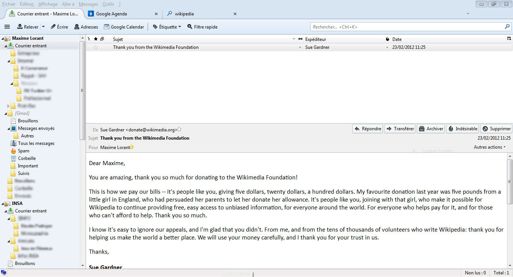

yt-dlpDocumentationEncrypted Email with ThunderbirdPrevious page: yt-dlpIndex page: DocumentationNext page: Encrypted Email with ThunderbirdEmail Overview
Anonymous Email. Thunderbird. Encryption.

Introduction
On the Whonix platform, there are two common methods for email:
- Webmail accessed via Tor Browser; or
- Encrypted Email with Thunderbird.
These and other solutions are imperfect, but this is not a Whonix-specific issue -- it is a general issue with email over the Tor network.
 It is estimated that within 10 to 15 years, Quantum Computers will break
today's common asymmetric public-key cryptography algorithms used for
web encryption (https), e-mail encryption (GnuPG...), SSH and other
purposes. See Post-Quantum
Cryptography (PQCrypto).
It is estimated that within 10 to 15 years, Quantum Computers will break
today's common asymmetric public-key cryptography algorithms used for
web encryption (https), e-mail encryption (GnuPG...), SSH and other
purposes. See Post-Quantum
Cryptography (PQCrypto).
Webmail
Webmail refers to accessing an email service via a web browser when connected to the Internet. Emails are stored and accessed on the online servers provided by the service. This approach provides convenience, as: [1]
- Messages can be stored and accessed by different devices in different locations, with syncing of services across those devices.
- Difficult desktop email setup configurations are avoided, since third-party applications are not required.
The obvious downside is most webmail requires JavaScript, and access from a public network could lead to an account compromise. Keep in mind that JavaScript is the most commonly used attack vector to exploit browsers and it permits detailed profiling when enabled. Further, data storage is limited and it is impossible to manage and read emails without an Internet connection. It is not easy to backup important emails, and multiple email accounts cannot be managed in this configuration. [2]
Email Clients
In comparison, email clients like Thunderbird [3] manage emails via a desktop application. In Thunderbird's case, various settings must be configured like the email address and email port server settings (POP3, SMTP etc.), among others. There are several benefits to a properly administered email client: [2]
- JavaScript is not required.
- No annoying webmail advertisements.
- Emails can be retrieved from providers at a specific time.
- New emails are stored on the home desktop computer. [4]
- Emails can be retrieved from multiple email addresses.
- It is possible to view and compose emails off-line.
- A properly configured client protects against tracking by Email Beacons.
Neither approach is foolproof, since email is inherently insecure. However, end-to-end, PGP-encrypted email with the Thunderbird email client is preferable because it provides better security than standard webmail. It is recommended to review comparisons of webmail providers and email clients before proceeding further.
Every pseudonymous e-mail identity must be configured in its own dedicated VM or snapshot to ensure they are not linked to one another. Thunderbird re-uses the same default SMTP server for sending mail for all accounts added, regardless of the email domain that is chosen to send e-mails.
Delta Chat
Delta Chat is a cross platform encrypted messenger that uses the current email network for its transport; all major desktop and mobile operating systems are supported. The GUI is designed to resemble the Signal chat application as much as possible for a superior user experience.
As of 2019, Delta Chat core libraries are available in Debian Sid and a Flatpak release can be downloaded from their website. rPGP (Rust OpenPGP implementation) is used for the encryption back-end. Neither Delta Chat nor rPGP have been audited yet.
Pretty Easy Privacy
Pretty Easy Privacy (p≡p) is a pluggable data encryption and
verification system. It provides automatic key management and a KeySync
protocol (still in testing and not yet activated) to sync private key
material across multiple devices that users want to read the same
messages on. [5] Enigmail is supported, but the
current implementation was experiencing serious bugs in late-2018 (now
resolved). [6] [7] TODO: investigate
if this changed due to Thunderbird
native OpenPGP support.
pEp is cross-platform, decentralized, has a peer-to-peer (P2P) design, [8] is message protocol-agnostic and provides end-to-end encryption. Most importantly, only users have the keys. It exists as a plugin for mail clients (Thunderbird and Outlook) on all major desktop systems and also as a mobile application for Android (beta) and iOS. Its cryptographic functionality is handled by an open source p≡p engine relying on already existing cryptographic implementations in software like: GnuPG; a modified version of netpgp (used only in iOS); and GNUnet (from p≡p v2.0). A non-transferable copyright cross-licensing agreement has just been concluded. This allows distributing of the GNUnet binary as part of pEp, with non-GPL licenses applying on restrictive platforms like the Apple store. [9]
In the default configuration, pEp does not rely on the Web of Trust or any form of centralized trust infrastructure. Instead users can verify each others' authenticity by comparing cryptographic fingerprints in the form of natural language strings, which the pEp developers have chosen to call "trustwords". If both sides are using pEp, it automatically uses the anonymous transport provided by GNUnet. With that technology, meta-data is no longer accessible to attackers. If the intended recipient has a GPG key, pEp is capable of inter-operating with legacy mail to secure that whenever possible ("opportunistic key exchange"). [10] The pEp project is guided by a foundation that supports Libre software [11] and the code has also been audited.
For further information on the project's progress, check the milestones pages.
Safe Email Principles
Attachments
Email attachments are often used as an exploit vector for infecting the recipient's machine(s), deanonymizing users, or tracking when attachments are viewed, forwarded and so on. To avoid being infected with malware, it is safest to open attachments in a separate VM that does not have an Internet connection. In Qubes-Whonix™, Disposables are ideal for opening potentially dangerous files.
Email Encryption
SSL/TLS encryption is inadequate to protect emails from prying eyes. With respect to commercial Mail Service Providers (MSPs), Invisible Things Lab has noted:
This means that all email messages traverse through a third party mail server unencrypted (even if SSL/TLS is used to transfer messages between servers). The MSP thus has, by definition, unrestricted access to any unencrypted email sent to and from ITL. This means that all unencrypted email messages should be treated as if they are being read by third parties.
This reinforces the Whonix stock recommendation to use email encryption with Thunderbird, which includes a graphical front-end for using the GnuPG ("GPG") encryption program. This is a suitable solution for the Whonix majority, unless individuals have self-assessed as being a high-risk target. Proper encryption bypasses the need to place complete trust in MSPs and removes potential access to sensitive information.
 Bear in mind, in the past Thunderbird+Enigmail did not encrypt
the subject line by default.
Bear in mind, in the past Thunderbird+Enigmail did not encrypt
the subject line by default.
TODO: investigate if this situation has improved since Thunderbird native OpenPGP support.
Email providers can log valuable data, even if the email content is encrypted and subject lines are random, hidden, empty, use just a dash (-), or contain misleading content. Data logging might include:
- When emails are sent and the intended recipients.
- Login times and the session length.
- How often email is fetched.
- The Tor exit relay utilized for anonymous email.
Extensive metadata can potentially assist adversaries to make (false) assumptions about the user and their identity.
Encrypted Webmail
A number of service providers offer encrypted webmail that is easy to use, by alleviating the burden and complexity of managing encryption keys. Email and encryption is provided in a single and intuitive web interface, which means it is unnecessary to use a terminal interface or configure complicated encryption software. In fact all encryption operations are handled by the provider's server-side software, which provides seamless email encryption with minimal user interaction.
This design affords convenience, but encrypted webmail comes with significant drawbacks. Since the provider maintains full control of the encryption keys, full trust is placed in a single, potential point of failure. If the server is compromised and the keys are stolen, all previously encrypted messages can be decrypted and read by the attacker. [12] Even if the provider becomes aware of the breach and they were not at fault, a disclosure is not guaranteed because it could severely impact future revenue. [13]
Another problem with encrypted webmail relates to the ongoing operation of the service. In the past, a number of providers have suddenly shutdown without warning, meaning it was difficult or impossible to retrieve personal encryption keys for specific accounts. [14] It is impossible for those affected to re-establish secure communications and trust until new encryption keys are created. [15]
A further risk to consider with encrypted webmail is the potential that the provider is itself a malicious entity. As one commentator on the Schneier on Security blog noted in 2019 in response to this question - "Since ProtonMail uses client side encryption and does not store any emails in plain text on their servers would you care to elaborate how they can be volunteers for assistance in providing access to the information they don't have access to in the first place?": [16]
Since they run the keyserver, and the counterparty's key isn't surfaced anywhere in the UI, in most cases all they need to do is feed you a MitM key when your client requests the counterparty's key.
There is a pretty well buried feature to tell the client to only trust one specific key for a given counterparty, but (1) it's buried well enough that few people will use it, and (2) it still doesn't help because of the next issue:
The entire client is javascript served to you at runtime, by ProtonMail, over TLS. That means ProtonMail -- or anyone in a position to MitM your TLS connection -- can serve you a poisoned variant of the client. Since browsers honor the cache control header, and also don't cache https content by default, your only shot at spotting the poisoned variant is during the session it's deployed. The poisoned variant could (1) ignore your "trust only this key" setting for given counterparties, revitalizing the attack described above; or (2) just yoink your plaintext messages; or, scariest of all, (3) yoink the symmetric key used to encrypt your asymmetric keys. If executed by ProtonMail, #3 is a "pwn once, pwn forever" attack because they hold all of the encrypted data, past and future.
A final possibility to consider is advanced adversaries who are capable of undertaking a spear phishing or other attack in order to access encrypted webmail. In a 2019 case, it was reported that suspected Russian hackers targeted Bellingcat researchers who had been researching alleged crimes by the Russian military. The researchers relied upon ProtonMail and were presented with fake Swiss domains that replicated ProtonMail's interface and accessed the real site in the background in real-time. After the researchers had entered their two-factor authentication codes to access their anonymized accounts, the attackers were then able to get into the email accounts in order to read their correspondence. This highlights that even if email accounts are fully end-to-end encrypted, they can still be accessed if passwords are mistakenly given away during an attack. [17]
Self-Hosting
Self-hosting e-mail is difficult. Even more difficult doing so
anonymously. See also Hosting Location Hidden Services and
 [Broken-ExtLink--no-url-was-provided].
[Broken-ExtLink--no-url-was-provided].
For example CTemplar posted a shut-down notice and users had only 1 month time to migrate to a new e-mail provider. Imagine your e-mail provider shutting down on short notice or instantly vanishing.
E-mail self-hosting protects against e-mail providers going out of business. A valid compromise for many users could be to at least own your own domain name but outsource the e-mail server hosting to a third-party.
Email Provider
Avoid well-known, large, corporate email providers who purposefully invade user privacy. For instance, Yahoo and Gmail use automated software to scan emails for keywords to tailor advertising and sell products. Hotmail also has a history of reading private emails and messages.
Prefer email providers that:
- Are free.
- Do not require JavaScript or other credentials for registration.
- Provide an onion service.
- Support PGP encryption and key management.
- Have encrypted inboxes by default.
- Have desktop email compatibility with Mozilla Thunderbird. [18]
The email provider will always represent a single point of failure. An email account may be quickly closed or suspended in response to external pressure by authorities. Similarly, the administrators may decide (or be forced) to terminate the service completely, or for specific individuals.
It is recommended to create backup anonymous email addresses with different providers so that alternative communication channels remain open in response to potentially hostile third party actions.
Email Forwarder
Email Forwarding service can be used as a safe measurement providing:
- Hide your real email provider through pseudonym address.
- Can be easily turned off and switch to another alias without losing your original email address which can help in avoiding mass spamming emails or blockage.
- Isolate your email activities by having different alias addresses for each activity which might make correlation of activities to the same identity more difficult.
Disadvantages:
- If the email forwarding service provider went offline you cannot receive or send new emails from the alias address.
- You need to trust the email forwarding provider to not use your email in malicious way like sending you spam/ads or malicious links. (You can solve this by self-hosting the email forwarding service.)
There are many email forwarding services such as for example Firefox Relay or AnonAddy. Others can be discovered through search engines.
JavaScript and Other Tracking Vectors
Many webmail services require JavaScript, which when enabled allows discovery of how fast a user types, how long it takes to read a message, common spelling mistakes, time taken to correct mistakes, destination email addresses, and when emails are received and from whom. For this reason, webmail with active JavaScript is strongly discouraged. In general, a browser is not a safe environment to directly write text; learn more on the Surfing, Posting and Blogging page.
Other potential tracking vectors include web beacons (webbugs) [19] which are embedded on various websites, allowing cookies to be implanted in the browser in order to track browsing habits. Email beacons use a similar tracking technique. In this case, tiny images are embedded in emails with unique identifiers in the URL. After the email is opened and the image is requested, the email sender learns when the message was read, along with the IP address (or proxy) that was used.
Registration and Personal Data
Basic precautions must be taken when registering an email address anonymously. For example, personal or identifying data must never be used, and the account must be exclusively paired with Tor. It is also safer to register an anonymous account with a provider that has never been used non-anonymously, and preferably without JavaScript.
The personal data recommendation is strongly reinforced by the early-2019 leak of personal information attached to email accounts for an estimated one billion people. In what is thought to be the largest data breach to date, an unsecured 150GB database linked to Verification.io was found to leak information like: [20] [21]
- Names.
- Birthdays.
- Addresses.
- Social media accounts.
- Place of employment.
- Actual emails.
This breach reinforces the danger of pairing personal information with email accounts, since it increases the risk of being hacked, spammed, or becoming a victim of fraudsters in the future.
Recommendation
The best balance of usability and security is granted by configuring Encrypted Email with Thunderbird:
- Control is retained over the strong OpenPGP encryption key pair created for email encryption/decryption.
- JavaScript threats posed by normal browsers are completely circumvented.
- Email Beacons are neutralized with the correct settings. [22]
- Various, additional configuration changes are recommended, such as preferring POP3 with SMTP since IMAP leaks more metadata. [23]
Email Provider Comparison
Email Provider Criteria
A common question is whether particular email providers are safer than others, for example Protonmail compared to Tutanota, Riseup, Gmail and so on. [24] [25] [26]
The earlier Email Provider section noted that email is always a single point of failure. Despite the many claims made by different services, they are unable to significantly improve privacy by design. Only a few questions are truly relevant:
- Is anonymous registration over Tor possible?
- Is any personal information required for registration?
- Can the account be exclusively paired with Tor - preferably via a (v3) onion service?
- Will the provider bow to external pressure by third-parties such as campaigns or authorities and close or suspend the account when free speech issues arise? This has a greater impact for projects or movements, rather than individual accounts.
- The account management system does not use JavaScript.
- Works reliably on mailing lists if the user intents to use any.
- POP email settings are available to download email and delete it from Riseup servers.
- SMTP
- IMAP (discouraged)
- Onion domain name.
- Server location.
- Jurisdiction.
- Warrant canary. [27]
- Criteria for Reviewing VPN Providers might also be applicable. For instance, some providers claims that IP addresses are not logged is impossible to verify.
- Price.
- Various e-mail provider security features such as SPF, DKIM, DMARC.
See
 [Broken-ExtLink--no-url-was-provided] and
[Broken-ExtLink--no-url-was-provided] for a number of test
websites.
[Broken-ExtLink--no-url-was-provided] and
[Broken-ExtLink--no-url-was-provided] for a number of test
websites.
One possible exception might be "pseudo-email" services [28] like BitMessage, I2P-Bote and Freemail. For instant messenger protocols with equivalent features, see Richochet IM and RetroShare.
A few mail providers who are frequently discussed as possible options are briefly considered below. Whonix stands neutral in this regard; objectively speaking no particular mail provider can be recommended.
Gmail
As noted in the Google Data Collection Techniques entry:
Email content is processed and read (scanned) by a computer for targeted advertising purposes and spam prevention. Under Google policies, there is an unlimited period of data retention and the potential for unintended secondary use of this information. Google has already admitted users have "no reasonable expectation" of confidentiality regarding personal emails.
Although Google allegedly stopped scanning all emails for advertising purposes in 2017, it is clear that employees are tasked to read users' emails for security or other purposes. [29] Further, Google has simply replaced one data-siphoning avenue with another -- third-party apps which can access and share data from Gmail's 1.5 billion users (in 2019). [30] Since Google is hostile to privacy, no-one should be surprised that pairing Tor with Gmail is exceedingly difficult. Mike Hearn from Google addressed this very issue on tor-talk in 2012: [31]:
Access to Google accounts via Tor (or any anonymizing proxy service) is not allowed unless you have established a track record of using those services beforehand. You have several ways to do that:
1) With Tor active, log in via the web and answer a security question, if any is presented. You may need to receive a code on your phone. If you don't have a phone number on the account the access may be denied.
2) Log in via the web without Tor, then activate Tor and log in again WITHOUT clearing cookies. The GAPS cookie on your browser is a large random number that acts as a second factor and will whitelist your access.
Once we see that your account has a track record of being successfully accessed via Tor the security checks are relaxed and you should be able to use TorBirdy.
Based on Google's poor privacy record, anti-Tor stance, and unrivaled profiling / data exfiltration in all ecosystems, Gmail is strongly recommended against. It would be very difficult to register an account and exclusively login over Tor. Google's insistence on personal identifiers such as mobile phone verification makes it practically impossible to achieve without jeopardizing anonymity. [32]
I2P Mail
Wikipedia provides a simple overview of the I2P email service: [33]
I2P has a free pseudonymous email service run by an individual called Postman. Susimail is a web-based email client intended primarily for use with Postman's mail servers, and is designed with security and anonymity in mind. Susimail was created to address privacy concerns in using these servers directly using traditional email clients, such as leaking the user's hostname while communicating with the SMTP server. It is currently included in the default I2P distribution, and can be accessed through the I2P router console web interface. Mail.I2P can contact both I2P email users, via user@mail.I2P and public internet email users from a user@I2Pmail.org address.
Although it is beneficial to clean the mail header, other applications can do the same. [34] Further, it is technically impossible to encrypt mails to clearnet addresses such as Gmail, Riseup and other providers, unless the sender and recipient are using end-to-end encryption such as OpenPGP. When these factors are considered, the I2P email service is no more or less secure than using alternatives.
Even though the service is based on I2P, it can still be accessed in Whonix over Tor; see I2P for instructions on tunneling I2P over Tor. To date, there has not been any notification of email account suspensions. [35] Factors outlined in the Safe Email Principles section may also equally apply.
Anonymity Friendly Email Provider List
 None of the following providers are explicitly recommended by the Whonix
team.
None of the following providers are explicitly recommended by the Whonix
team.
As it is impossible to maintain an up-to-date list of possible providers who are anonymity-friendly, readers should undertake proper research before making a final decision.
Onion Service Providers
This Reddit thread is actively curated and maintains a list of privacy-friendly (Tor-accessible) providers.
Additional Provider Lists
If a suitable provider cannot be found above, then also check the following lists:
- Dismail.de's Email server security list
- PrivacyGuides.org Email Providers List
- Prxbx.com's Privacy-Conscious Email Services
- Also check this list for possible alternatives.
- Free Software Foundation: Free Software Webmail Systems
Encrypted Email
The Mozilla Thunderbird email client is a useful additions for your operating system. If used correctly, they provide for easy GPG encryption and anonymous (or pseudonymous) email messaging.
A complete set of instructions is now available to:
- Install the Thunderbird email client.
- Create an email account anonymously with a suitable provider via Tor Browser.
- Store the login credentials in KeePassXC.
- Setup the new email account: Thunderbird account settings, install necessary extensions (add-ons), and enforce connections to the email provider's Onion Service.
- Create an OpenPGP encryption key pair and revocation certificate using the OpenPGP Setup Wizard.
- Encrypt and store the revocation certificate securely.
- Configure Thunderbird preferences for greater security and anonymity.
- Configure additional OpenPGP preferences via OpenPGP Setup Wizard.
- Key management: import GPG public keys.
- Export the public key to a GPG key server.
- Prepare an email signature with the public GPG key ID and fingerprint.
- Compose and send a test encrypted email.
- Open an encrypted email received in Thunderbird.
Email Alternatives
BitMessage
This entry has been moved here.
Freemail
Freemail [36] is an email system implemented for the anonymous data distribution network Freenet. It is most similar to I2P-Bote, another anonymous and distributed (serverless) email solution.
Like most Freenet plugins, Freemail makes use of an anti-spam mechanism called the Web of Trust [37] to block abusers. Attachment sizes are virtually unlimited and users simply upload files on Freenet and link to them in Freemail messages.
See recommended tips for Freemail.
I2P-Bote
I2P-Bote is a serverless, encrypted email plugin that uses I2P for anonymity. Messages are stored in the distributed hash table (DHT) for 100 days, during which the recipient is able to download them.
To back up I2P-Bote data, copy the i2pbote folder inside the I2P config directory. On Unix systems the relevant directory is ~/.i2p/i2pbote, or /var/lib/i2p/i2p-config if running it as a daemon.
Compartmentalize activities and only use the I2P-Bote/Susimail VM snapshot for this purpose. Generally speaking, applications that run with a browser interface are vulnerable to a whole class of bugs, including cross-site request forgery (CSRF). [38]
Features
- themeable webmail interface
- user interface translated into many languages
- one-click creation of email accounts (called email identities)
- emails can be sent under a sender identity, or anonymously
- ElGamal, Elliptic Curve, and NTRU encryption
- encryption and signing is transparent, without the need to know about PGP
- delivery confirmation
- basic support for short recipient names
- IMAP / SMTP
Footnotes / References
- https://windowsreport.com/webmail-desktop-email-client/
- https://difference.guru/difference-between-an-email-client-and-webmail/
- Outlook is the equivalent on the Windows platform.
- Via a mail transfer agent.
- https://news.ycombinator.com/item?id=12827020
- https://enigmail-users.enigmail.narkive.com/YAZmvp9Q/enigmail-enigmail-p-p-current-release-for-windows-is-faulty-solution-in-progress
- This bug affected Windows users and meant the reliable encryption and decryption of emails only occurred in the classic Enigmail mode.
- https://techterms.com/definition/p2p
- https://lists.gnu.org/archive/html/gnunet-developers/2016-12/msg00046.html
- https://pep-project.org/2014-09/s1410740156
- https://pep-project.org/
- History is replete with successful webmail breaches. Webmail is a high value target for attackers -- one of largest data breaches in history came at the expense of Yahoo webmail users.
- In Yahoo's case they waited two years to inform the public of the data breach, see: Yahoo data breach casts 'cloud' over Verizon deal.
- See: Lavabit email service abruptly shut down citing government interference.
- Note: while established trust with keys not under the user's control is similar in context to the OpenPGP Web of Trust, the two issues should not be confused.
- https://www.schneier.com/blog/archives/2019/07/friday_squid_bl_687.html/#comment-338838
- https://www.forbes.com/sites/zakdoffman/2019/07/26/russian-intelligence-cyberattacked-journalists-hacking-encrypted-email-accounts/
- Formerly "Icedove", but now re-branded in Debian following resolution of trademark issues.
- https://en.wikipedia.org/wiki/Web_beacon
- https://nypost.com/2019/03/29/emails-of-nearly-1-billion-people-leaked-in-massive-data-breach/
- Passwords and credit card details were not leaked.
- Such as disabling remote images embedded in HTML emails or enforcing plain text email messages. In the Whonix Thunderbird configuration.
- For example, how long a user has been running the mail client. IMAP comes with other risks, like saving drafts on the server as the user is typing.
- In the past users asked whether I2Pmail was safer than Tor Mail, although Tor Mail is now offline because it was hosted on Freedom Hosting which was taken down by the FBI.
- https://www.wired.com/2013/09/freedom-hosting-fbi/
- Notably the FBI network investigative technique (NIT; aka "hack") used with Tor Mail relied on malicious code that sent the real IP address to a Virginian server. However, the code appeared before users logged in, meaning it was a dragnet technique rather than a targeted measure; innocent users of the service would have been similarly hacked.
- In the past, the riseup canary was not updated on a fixed, regular basis. https://www.vice.com/en/article/bmv34m/warrant-canary-for-activist-email-service-riseup-seemingly-expires
- These have a different design to classical email and are therefore incompatible.
- https://betanews.com/2018/07/04/google-response-to-gmail-privacy-concerns/
- https://expandedramblings.com/index.php/gmail-statistics/
- https://lists.torproject.org/pipermail/tor-talk/2012-October/025923.html
- Google will also have knowledge of online phone and messaging services and any prior history of blacklisting for verification purposes.
- https://en.wikipedia.org/wiki/I2P
- Like the former TorBirdy add-on.
- It is unknown whether spam abuse has become an issue.
- https://github.com/freenet/plugin-Freemail/blob/master/docs/spec/spec.tex
- https://github.com/freenet/wiki/wiki/Web-of-Trust
- * broken link: https://chaoswebs.net/blog/2016/12/01/Exploiting-I2P-Bote/ * broken link: https://chaoswebs.net/blog/2016/10/15/Stealing-Your-I2P-Email/